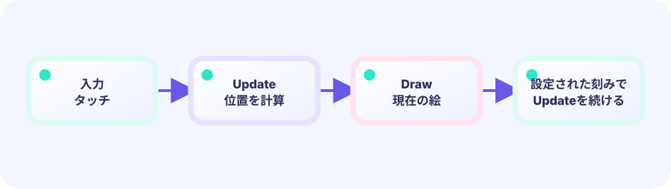
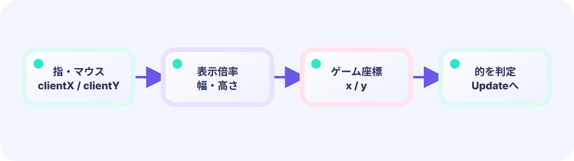

UPDATE
入力を読み、スコアや位置などの数字を進めます。ここには絵を描きません。
func (g *Game) Update() error★☆☆☆☆ / PLAYABLE
画面に出た丸をすばやくタッチする、いちばん小さなゲームです。ここから「ゲームはどう動くか」と「押した場所はどう数えるか」をいっしょに学びます。
PLAY FIRST / まず遊ぶ
クリックでも画面タッチでも遊べます。光る丸を押すと1点入り、丸は別の場所へ移動します。30秒で何回当てられるか試したら、下で「なぜ動くのか」を一緒にほどきます。
WHAT'S INSIDE / BEFORE ANYTHING ELSE
さっき遊んだゲームを、3つの仕事に分けます。Updateは入力を読み、「当たったら1点」「丸を移動する」というルールと状態を、エンジンが決めた一定の刻みで進めます。Drawは呼ばれた時に最新の状態を読み、画面へ見せるだけです。Drawが何回呼ばれても、呼ばれなくても、得点や丸の位置を勝手に変えません。Layoutはゲーム内の基準サイズを答えます。Goでは、このようにGameへ結び付いた仕事をメソッドと呼びます。
入力を読み、スコアや位置などの数字を進めます。ここには絵を描きません。
func (g *Game) Update() errorいまの数字どおりに、丸や文字を画面へ描きます。入力も計算も状態変更もしません。
func (g *Game) Draw(screen *ebiten.Image)ゲーム内の基準サイズを返します。画面の拡大縮小はエンジンに任せます。
func (g *Game) Layout(w, h int) (int, int)NEW WORD / TICK
1 tick = Update 1回分別もの1 frame = 画面の1コマtick（ティック）は、EbitengineがUpdateを1回呼び、ゲームの数字を1段進める単位です。初期設定では通常1秒に約60 tickですが変更できます。frame（フレーム）はDrawが作る絵の1コマです。Drawが遅れたり省略されたりしてもUpdateのtickは進められるため、この教材ではゲーム状態を進める単位をframeとは呼びません。
TRY IT / GAME LOOP
ボタンを押すと、説明の注目先だけが切り替わります。これは実行順を再現するボタンではありません。Updateはゲームを進め、Drawは呼ばれた時の状態を表示する、という独立した役割を見比べるための模型です。
Updateの刻みは設定できます。Drawの回数や見た目を変えても、Updateが決めた操作とルールは変わりません。
TRY IT · GO
func (g *game) Update() error { /* numbers */ } func (g *game) Draw(screen *ebiten.Image) { /* paint */ } ebiten.RunGame(g) // Update ticks; Draw presents snapshots
—
ルールと現在地は同じ game にあり、Drawはそれをどう見せるか担当します。見た目を描き替えても、ゲームのルールはそのままです。
Update → game / game → DrawBUILD RECIPE
このサイトではビルド済みゲームが埋め込まれているので、今は遊んで読むだけで大丈夫。自分のPCで動かすときだけ上のコマンドが必要です。



ゲームの事実 → 見せ方
Updateは得点や位置など、ゲームの事実を進めます。Drawはそれを変えず、呼ばれた時に画面へ見せます。すぐ下の動く見本では、一つのゲーム状態を違う描き方で同時に表示しています。
UPDATE: score / position
↓
game
↓
DRAW: 画面にどう見せるかひとつのゲーム、自由な見せ方
Updateとgame構造体がゲームの事実を司ります。下の並んだ画面は、同じ自動プレイの位置・箱・ゴールを同時に見ています。違うのはDrawだけで、このデモ以外の見せ方にも自由に差し替えられます。
DEEP DIVE / INPUT & COORDINATES
ループの仕組みがわかったら、次は中身です。画面はマス目のないグラフ用紙。画像のピクセルは左上から右へ、次の行へと数える約束なので、左上が (0, 0)、右へ行くほど X が、下へ行くほど Y が大きくなります。数学のグラフとはYの向きが逆です。タッチした点と丸の中心の距離が、半径より短ければ「当たった！」です。
画面のどこかを、2つの数で表します。丸の中心も、タッチした場所も、同じ X と Y で書けます。
circleX, circleY2点のあいだの長さです。math.Hypot(dx, dy) は、たて・よこの差から2点の距離を出す便利関数（中学の三平方の定理と同じ計算）。これはGo標準のmathパッケージの道具なので、ファイル上部に import "math" が必要です。
math.Hypot(dx, dy)距離が半径以下ならヒット。得点して、次の丸を別の場所へ移します。
dist <= radiusTRY IT / HIT TEST
右のボードをタップすると、押した点と丸の中心の差が出ます。距離が 70 以下ならヒットです。
本物のゲームでも、マウスとタッチを同じ「押した座標」にそろえてから判定します。
TRY IT · GO
dx := touchX - circleX; dy := touchY - circleY dist := math.Hypot(dx, dy) if dist <= radius { score++; moveTarget() } // dist > radius → no score
—
THE ONE-LINE RULE
dx = touchX - circleXそしてdy = touchY - circleY本体のコードは dist := math.Hypot(dx, dy) のあと dist <= radius です。同じことを dx*dx+dy*dy <= radius*radius と二乗のまま比べても結果は同じ（Hypot が内部で使う平方根の計算を省ける、というだけの話です）。まずは Hypot で「距離 ≤ 半径」と覚えましょう。
IN THE REAL GAME
Updateに書く押された瞬間だけ座標を読み、距離を調べます。Update() error の error は Ebitengine の決まりで、「止める理由があればエラーを返す」。普通は問題ないので return nil（何も問題なし）です。Draw は絵だけなので error を返しません。
func (g *game) Update() error {
px, py, pressed := pressedPosition()
if !pressed {
return nil
}
// 押した点と中心の距離
dist := math.Hypot(float64(px)-g.circleX, float64(py)-g.circleY)
if dist <= g.radius {
g.score++
g.moveTarget()
}
return nil
}TODAY — まずここを見る
この3つは、下の全部のコードを読むときの「地図」です。まずこの順番で探せば迷いません。全部を一度に理解しなくても大丈夫、あとで少しずつ読み直せば十分です。
下のコードがこのゲームの全部です（図形だけで動いています）。コピーして手元で開けます。今すぐ全行を理解する必要はありません。上の「まずここを見る」3つの場所だけ見つけられれば十分で、残りは気になったときに読めば大丈夫です。
package main
import (
"fmt"
"image/color"
"math"
"math/rand"
"github.com/kumagi/EbiShowcase/internal/lessonlogic"
"github.com/hajimehoshi/ebiten/v2"
"github.com/hajimehoshi/ebiten/v2/ebitenutil"
"github.com/hajimehoshi/ebiten/v2/inpututil"
"github.com/hajimehoshi/ebiten/v2/vector"
)
// --- 画面の大きさ（ゲーム内のマス目） ---
const (
screenWidth = 480
screenHeight = 720
startSeconds = 30
)
// game はこのゲームの全部の数字を入れた箱です。
type game struct {
circleX float64 // 丸の中心 X
circleY float64 // 丸の中心 Y
radius float64 // 丸の半径
score int // 得点
framesLeft int // 残りフレーム（60フレーム ≒ 1秒）
started bool // スタートしたか
rng *rand.Rand
}
func newGame() *game {
g := &game{
radius: 38,
framesLeft: startSeconds * 60,
rng: rand.New(rand.NewSource(11)),
}
g.moveTarget()
return g
}
// 丸を別の場所へ移す
func (g *game) moveTarget() {
g.circleX = 60 + g.rng.Float64()*(screenWidth-120)
g.circleY = 130 + g.rng.Float64()*(screenHeight-240)
}
// マウスまたはタッチで「いま押した位置」を返す
func pressedPosition() (x, y int, pressed bool) {
if inpututil.IsMouseButtonJustPressed(ebiten.MouseButtonLeft) {
x, y = ebiten.CursorPosition()
return x, y, true
}
ids := inpututil.AppendJustPressedTouchIDs(nil)
if len(ids) > 0 {
x, y = ebiten.TouchPosition(ids[0])
return x, y, true
}
return 0, 0, false
}
// --- ここから Update（数字を進める） ---
func (g *game) Update() error {
px, py, pressed := pressedPosition()
// まだ始まっていない → 押したらスタート
if !g.started {
if pressed {
g.started = true
}
return nil
}
// 時間切れ → 押したら最初から
if g.framesLeft <= 0 {
if pressed {
g.score = 0
g.framesLeft = startSeconds * 60
g.started = false
g.moveTarget()
}
return nil
}
// タイマーを1 tick減らす
g.framesLeft--
// 押した瞬間だけ、丸との距離を調べる
if pressed {
if lessonlogic.PointInCircle(float64(px), float64(py), g.circleX, g.circleY, g.radius) {
g.score++
// 当たるほど丸を少し小さくする
g.radius = math.Max(22, 38-float64(g.score)/2)
g.moveTarget()
}
}
return nil
}
// --- ここから Draw（画面に描く） ---
func (g *game) Draw(screen *ebiten.Image) {
screen.Fill(color.RGBA{7, 20, 38, 255})
// 背景のうすい円
for i := 0; i < 12; i++ {
vector.StrokeCircle(
screen,
float32(screenWidth/2),
float32(screenHeight/2),
float32(55+i*38),
1,
color.RGBA{45, 226, 194, 25},
false,
)
}
// 光る丸（外側のぼかし → 本体 → ハイライト）
vector.DrawFilledCircle(screen, float32(g.circleX), float32(g.circleY), float32(g.radius+8), color.RGBA{45, 226, 194, 45}, false)
vector.DrawFilledCircle(screen, float32(g.circleX), float32(g.circleY), float32(g.radius), color.RGBA{45, 226, 194, 255}, false)
vector.DrawFilledCircle(screen, float32(g.circleX-10), float32(g.circleY-10), float32(g.radius/4), color.RGBA{230, 255, 249, 220}, false)
ebitenutil.DebugPrintAt(screen, fmt.Sprintf("SCORE %02d", g.score), 24, 24)
ebitenutil.DebugPrintAt(screen, fmt.Sprintf("TIME %02d", max(0, g.framesLeft/60)), 380, 24)
if !g.started {
ebitenutil.DebugPrintAt(screen, "TAP THE TARGET\n\nCLICK / TOUCH TO START", 145, 320)
} else if g.framesLeft <= 0 {
ebitenutil.DebugPrintAt(screen, fmt.Sprintf("TIME UP! SCORE %d\n\nTAP TO RETRY", g.score), 160, 320)
}
}
// --- Layout（画面の大きさ） ---
func (g *game) Layout(_, _ int) (int, int) {
return screenWidth, screenHeight
}
func main() {
ebiten.SetWindowSize(screenWidth, screenHeight)
ebiten.SetWindowTitle("Tap the Target — Ebitengine")
if err := ebiten.RunGame(newGame()); err != nil {
panic(err)
}
}
WITHOUT THE LOOP
Update / Draw の役割が決まっていると、「入力はここ」「絵はここ」と迷わず足せます。
WITH COORDINATES
見た目が丸でも、判定は中心と半径の計算です。どの画面サイズでも同じルールになります。
YOUR FIRST RULE
games/core/tap-target/main.go の game に combo int を足し、Update の命中ブロックで g.score++ の直後に g.combo++ を書きます。時間切れ・リトライ時は g.combo = 0。Draw は g.combo を表示するだけにします。go test ./... を通し、ローカルで連続命中の数を確かめましょう。radius の調整はこの RULE のあとにできる補助 TUNING です。
FEEDBACK